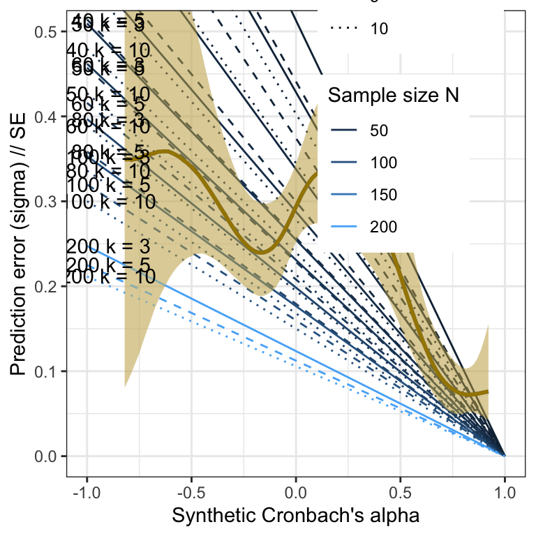

Margin of error comparison.
knitr::opts_chunk$set(
warning = TRUE, # show warnings during codebook generation
message = TRUE, # show messages during codebook generation
error = TRUE, # do not interrupt codebook generation in case of errors,
# usually better for debugging
echo = TRUE, # show R code
fig.width = 4,
fig.height = 4
)
ggplot2::theme_set(ggplot2::theme_bw())## ── Attaching core tidyverse packages ──────────────────────── tidyverse 2.0.0 ──
## ✔ dplyr 1.1.4 ✔ readr 2.1.5
## ✔ forcats 1.0.0 ✔ stringr 1.5.1
## ✔ ggplot2 3.5.1 ✔ tibble 3.2.1
## ✔ lubridate 1.9.3 ✔ tidyr 1.3.1
## ✔ purrr 1.0.2
## ── Conflicts ────────────────────────────────────────── tidyverse_conflicts() ──
## ✖ dplyr::filter() masks stats::filter()
## ✖ dplyr::lag() masks stats::lag()
## ℹ Use the conflicted package (<http://conflicted.r-lib.org/>) to force all conflicts to become errors##
## Attaching package: 'labelled'
##
## The following object is masked from 'package:codebook':
##
## to_factorMargin of error.
Comparison to pilot studies of different sizes.
Item pairs
Ns = c(10, 15, 20, 30, 40, 50, 60, 80, 100, 200)
r_distribution = seq(from = -1, to = 1, by = 0.01)
simulation_results = list()
for (e in 1:length(Ns)) {
N = Ns[e]
for (i in seq_along(1:1)) {
print(paste("N =", N, "i =", i))
se = (1 - r_distribution^2)/sqrt(N - 3)
index = (e - 1) + i
simulation_results[[index]] = data.frame(N = N, r = r_distribution, se = se)
}
}## [1] "N = 10 i = 1"
## [1] "N = 15 i = 1"
## [1] "N = 20 i = 1"
## [1] "N = 30 i = 1"
## [1] "N = 40 i = 1"
## [1] "N = 50 i = 1"
## [1] "N = 60 i = 1"
## [1] "N = 80 i = 1"
## [1] "N = 100 i = 1"
## [1] "N = 200 i = 1"## [1] 10## [1] 2010sim_res %>%
ggplot(aes(x = r, y = se, color = N, group = N)) +
geom_line() +
geom_text(aes(label = N), data = sim_res %>% group_by(N) %>% filter(r == 0), nudge_y = 0.002) +
theme_bw()Validation
## Loading required package: Rcpp## Loading 'brms' package (version 2.22.0). Useful instructions
## can be found by typing help('brms'). A more detailed introduction
## to the package is available through vignette('brms_overview').##
## Attaching package: 'brms'## The following object is masked from 'package:stats':
##
## arplot_prediction_error_items <- plot(conditional_effects(m_lmsynth, dpar = "sigma"), plot = F)[[1]] +
theme_bw() +
xlab("Synthetic inter-item correlation") +
ylab("Prediction error (sigma) // SE") +
geom_smooth(stat = "identity", color = "#a48500", fill = "#EDC951") +
geom_line(aes(x = r, y = se, color = N, group = N, ymin = NULL, ymax = NULL), data = sim_res) +
geom_text(aes(label = paste("N =", N), x = r, y = se, color = N, group = N, ymin = NULL, ymax = NULL), data = sim_res %>% group_by(N) %>% filter(r == 0), nudge_y = 0.01) +
scale_color_gradient(guide = "none")## Loading required package: rstan## Loading required package: StanHeaders##
## rstan version 2.32.6 (Stan version 2.32.2)## For execution on a local, multicore CPU with excess RAM we recommend calling
## options(mc.cores = parallel::detectCores()).
## To avoid recompilation of unchanged Stan programs, we recommend calling
## rstan_options(auto_write = TRUE)
## For within-chain threading using `reduce_sum()` or `map_rect()` Stan functions,
## change `threads_per_chain` option:
## rstan_options(threads_per_chain = 1)##
## Attaching package: 'rstan'## The following object is masked from 'package:tidyr':
##
## extractPilot
m_lmsynth_items_pilot <- readRDS("ignore/m_synth_r_items_lm.rds")
plot_prediction_error_items_pilot <- plot(conditional_effects(m_lmsynth_items_pilot, dpar = "sigma"), plot = F)[[1]] +
theme_bw() +
xlab("Synthetic inter-item correlation") +
ylab("Prediction error (sigma) // SE") +
geom_line(aes(x = r, y = se, color = N, group = N, ymin = NULL, ymax = NULL), data = sim_res) +
geom_smooth(stat = "identity", color = "#a48500", fill = "#EDC951") +
geom_text(aes(label = paste("N =", N), x = r, y = se, color = N, group = N, ymin = NULL, ymax = NULL), data = sim_res %>% group_by(N) %>% filter(r == 0), nudge_y = 0.01) +
scale_color_gradient(guide = "none")
plot_prediction_error_items_pilotScale pairs
Validation
m_lmsynth_scales <- readRDS("ignore/m_synth_rr_r_scales_lm8.rds")
plot_prediction_error_scales <- plot(conditional_effects(m_lmsynth_scales, dpar = "sigma"), plot = F)[[1]] +
theme_bw() +
xlab("Synthetic inter-scale correlation") +
ylab("Prediction error (sigma) // SE") +
geom_smooth(stat = "identity", color = "#a48500", fill = "#EDC951") +
geom_line(aes(x = r, y = se, color = N, group = N, ymin = NULL, ymax = NULL), data = sim_res) +
geom_text(aes(label = paste("N =", N), x = r, y = se, color = N, group = N, ymin = NULL, ymax = NULL), data = sim_res %>% group_by(N) %>% filter(r == 0), nudge_y = 0.01) +
scale_color_gradient(guide = "none")
plot_prediction_error_scalesPilot
m_lmsynth_scales_pilot <- readRDS("ignore/m_synth_r_scales_lm8.rds")
plot_prediction_error_scales_pilot <- plot(conditional_effects(m_lmsynth_scales_pilot, dpar = "sigma"), plot = F)[[1]] +
theme_bw() +
xlab("Synthetic inter-scale correlation") +
ylab("Prediction error (sigma) // SE") +
geom_line(aes(x = r, y = se, color = N, group = N, ymin = NULL, ymax = NULL), data = sim_res) +
geom_smooth(stat = "identity", color = "#a48500", fill = "#EDC951") +
geom_text(aes(label = paste("N =", N), x = r, y = se, color = N, group = N, ymin = NULL, ymax = NULL), data = sim_res %>% group_by(N) %>% filter(r == 0), nudge_y = 0.01) +
scale_color_gradient(guide = "none")
plot_prediction_error_scales_pilotReliabilities
Validation
Ns = c(15, 20, 30, 40, 50, 60, 80, 100, 200)
ks = c(3, 5, 10)
a_distribution = seq(from = -1, to = 1, by = 0.01)
simulation_results = list()
rowdiff = function(x) {
lcl = x$ALPHA - x$LCL
ucl = x$UCL - x$ALPHA
(lcl + ucl)/2
}
for (e in seq_along(Ns)) {
N = Ns[e]
for (f in seq_along(ks)) {
k = ks[f]
print(paste("N =", N, "k =", k))
se = rowdiff(psychometric::alpha.CI(a_distribution, k = k, N = N, level = 0.95))/1.96
simulation_results[[length(simulation_results) + 1]] = data.frame(N = N, k = k, a = a_distribution, se = se)
}
}## [1] "N = 15 k = 3"
## [1] "N = 15 k = 5"
## [1] "N = 15 k = 10"
## [1] "N = 20 k = 3"
## [1] "N = 20 k = 5"
## [1] "N = 20 k = 10"
## [1] "N = 30 k = 3"
## [1] "N = 30 k = 5"
## [1] "N = 30 k = 10"
## [1] "N = 40 k = 3"
## [1] "N = 40 k = 5"
## [1] "N = 40 k = 10"
## [1] "N = 50 k = 3"
## [1] "N = 50 k = 5"
## [1] "N = 50 k = 10"
## [1] "N = 60 k = 3"
## [1] "N = 60 k = 5"
## [1] "N = 60 k = 10"
## [1] "N = 80 k = 3"
## [1] "N = 80 k = 5"
## [1] "N = 80 k = 10"
## [1] "N = 100 k = 3"
## [1] "N = 100 k = 5"
## [1] "N = 100 k = 10"
## [1] "N = 200 k = 3"
## [1] "N = 200 k = 5"
## [1] "N = 200 k = 10"## [1] 27## [1] 5427sim_res %>%
ggplot(aes(x = a, y = se, color = N, linetype = factor(k), group = interaction(N, k))) +
geom_line() +
geom_text(aes(label = paste("N =", N, "k =", k), x = a, y = se, color = N, group = N, ymin = NULL, ymax = NULL), data = sim_res %>% group_by(N, k) %>% filter(a == -.99), nudge_y = 0.002) +
theme_bw()
sim_res %>%
ggplot(aes(x = a, y = se, color = N, linetype = factor(k), group = interaction(N, k))) +
geom_line() +
geom_text(aes(label = paste("N =", N, "k =", k), x = a, y = se, color = N, group = N, ymin = NULL, ymax = NULL), data = sim_res %>% group_by(N, k) %>% filter(a == -.99), nudge_y = 0.002) +
theme_bw()Validation
library(brms)
m_synth_rr_rel_lm <- readRDS("ignore/m_synth_rr_rel_lm.rds")
plot_prediction_error_rels <- plot(conditional_effects(m_synth_rr_rel_lm, dpar = "sigma"), plot = F)[[1]] +
theme_bw() +
xlab("Synthetic Cronbach's alpha") +
ylab("Prediction error (sigma) // SE") +
geom_line(aes(x = a, y = se, color = N, linetype = factor(k), group = interaction(N, k), ymin = NULL, ymax = NULL), data = sim_res) +
geom_smooth(stat = "identity", color = "#a48500", fill = "#EDC951") +
geom_text(aes(label = paste("N =", N, "k =", k), x = a, y = se, ymin = NULL, ymax = NULL), data = sim_res %>% group_by(N, k) %>% filter(a == -.99), nudge_y = 0.002) +
scale_color_gradient("Sample size N", guide = "legend") +
scale_linetype_manual("Number of items k", values = c("solid", "dashed", "dotted", "twodash"),
guide = "legend") +
# place legend in top right corner
theme(legend.position = c(0.75, 0.85)) +
coord_cartesian(xlim = c(-1, 1), ylim = c(0, 0.5))## Warning: A numeric `legend.position` argument in `theme()` was deprecated in ggplot2
## 3.5.0.
## ℹ Please use the `legend.position.inside` argument of `theme()` instead.
## This warning is displayed once every 8 hours.
## Call `lifecycle::last_lifecycle_warnings()` to see where this warning was
## generated.
Pilot
library(brms)
m_synth_rel_lm <- readRDS("ignore/m_synth_rel_lm.rds")
plot_prediction_error_rels_pilot <- plot(conditional_effects(m_synth_rel_lm, dpar = "sigma"), plot = F)[[1]] +
theme_bw() +
xlab("Synthetic Cronbach's alpha") +
ylab("Prediction error (sigma) // SE") +
geom_line(aes(x = a, y = se, color = N, linetype = factor(k), group = interaction(N, k), ymin = NULL, ymax = NULL), data = sim_res) +
geom_smooth(stat = "identity", color = "#a48500", fill = "#EDC951") +
geom_text(aes(label = paste("N =", N, "k =", k), x = a, y = se, ymin = NULL, ymax = NULL), data = sim_res %>% group_by(N, k) %>% filter(a == -.99), nudge_y = 0.002) +
scale_color_gradient("Sample size N", guide = "legend") +
scale_linetype_manual("Number of items k", values = c("solid", "dashed", "dotted", "twodash"),
guide = "legend") +
# place legend in top right corner
theme(legend.position = c(0.75, 0.85)) +
coord_cartesian(xlim = c(-1, 1), ylim = c(0, 0.5))
plot_prediction_error_rels_pilotCombined plot
library(patchwork)
(plot_prediction_error_items_pilot + ggtitle("Pilot study") +
plot_prediction_error_rels_pilot +
scale_color_gradient("Sample size N", guide = "none") +
plot_prediction_error_scales_pilot) /
(plot_prediction_error_items + ggtitle("Validation study") +
plot_prediction_error_rels + scale_color_gradient("Sample size N", guide = "none") +
scale_linetype_manual("Number of items k", values = c("solid", "dashed", "dotted", "twodash"),
guide = "none") +
plot_prediction_error_scales)## Scale for colour is already present.
## Adding another scale for colour, which will replace the existing scale.
## Scale for colour is already present.
## Adding another scale for colour, which will replace the existing scale.
## Scale for linetype is already present.
## Adding another scale for linetype, which will replace the existing scale.
LS0tCnRpdGxlOiAiTWFyZ2luIG9mIGVycm9yIGNvbXBhcmlzb24uIgpvdXRwdXQ6CiAgaHRtbF9kb2N1bWVudDoKICAgIHRvYzogdHJ1ZQogICAgdG9jX2RlcHRoOiA0CiAgICB0b2NfZmxvYXQ6IHRydWUKICAgIGNvZGVfZm9sZGluZzogJ2hpZGUnCiAgICBzZWxmX2NvbnRhaW5lZDogdHJ1ZQogIHBkZl9kb2N1bWVudDoKICAgIHRvYzogeWVzCiAgICB0b2NfZGVwdGg6IDQKICAgIGxhdGV4X2VuZ2luZTogeGVsYXRleAotLS0KCgpgYGB7ciBzZXR1cH0Ka25pdHI6Om9wdHNfY2h1bmskc2V0KAogIHdhcm5pbmcgPSBUUlVFLCAjIHNob3cgd2FybmluZ3MgZHVyaW5nIGNvZGVib29rIGdlbmVyYXRpb24KICBtZXNzYWdlID0gVFJVRSwgIyBzaG93IG1lc3NhZ2VzIGR1cmluZyBjb2RlYm9vayBnZW5lcmF0aW9uCiAgZXJyb3IgPSBUUlVFLCAjIGRvIG5vdCBpbnRlcnJ1cHQgY29kZWJvb2sgZ2VuZXJhdGlvbiBpbiBjYXNlIG9mIGVycm9ycywKICAgICAgICAgICAgICAgICMgdXN1YWxseSBiZXR0ZXIgZm9yIGRlYnVnZ2luZwogIGVjaG8gPSBUUlVFLCAgIyBzaG93IFIgY29kZQogIGZpZy53aWR0aCA9IDQsCiAgZmlnLmhlaWdodCA9IDQKKQpnZ3Bsb3QyOjp0aGVtZV9zZXQoZ2dwbG90Mjo6dGhlbWVfYncoKSkKCmBgYAoKYGBge3IgbGlicmFyaWVzfQpsaWJyYXJ5KHRpZHl2ZXJzZSkKbGlicmFyeShjb2RlYm9vaykKbGlicmFyeShoYXZlbikKbGlicmFyeShsYWJlbGxlZCkKYGBgCgojIE1hcmdpbiBvZiBlcnJvci4gCkNvbXBhcmlzb24gdG8gcGlsb3Qgc3R1ZGllcyBvZiBkaWZmZXJlbnQgc2l6ZXMuCgojIyBJdGVtIHBhaXJzCgpgYGB7cn0KTnMgPSBjKDEwLCAxNSwgMjAsIDMwLCA0MCwgNTAsIDYwLCA4MCwgMTAwLCAyMDApCnJfZGlzdHJpYnV0aW9uID0gc2VxKGZyb20gPSAtMSwgdG8gPSAxLCBieSA9IDAuMDEpCnNpbXVsYXRpb25fcmVzdWx0cyA9IGxpc3QoKQoKZm9yIChlIGluIDE6bGVuZ3RoKE5zKSkgewogIE4gPSBOc1tlXQogIGZvciAoaSBpbiBzZXFfYWxvbmcoMToxKSkgewogICAgcHJpbnQocGFzdGUoIk4gPSIsIE4sICJpID0iLCBpKSkKICAgIHNlID0gKDEgLSByX2Rpc3RyaWJ1dGlvbl4yKS9zcXJ0KE4gLSAzKQogICAgaW5kZXggPSAoZSAtIDEpICsgaQogICAgc2ltdWxhdGlvbl9yZXN1bHRzW1tpbmRleF1dID0gZGF0YS5mcmFtZShOID0gTiwgciA9IHJfZGlzdHJpYnV0aW9uLCBzZSA9IHNlKQogIH0KfQpsZW5ndGgoc2ltdWxhdGlvbl9yZXN1bHRzKQpzaW1fcmVzIDwtIGJpbmRfcm93cyhzaW11bGF0aW9uX3Jlc3VsdHMpCm5yb3coc2ltX3JlcykKCnNpbV9yZXMgJT4lCiAgZ2dwbG90KGFlcyh4ID0gciwgeSA9IHNlLCBjb2xvciA9IE4sIGdyb3VwID0gTikpICsKICBnZW9tX2xpbmUoKSArCiAgZ2VvbV90ZXh0KGFlcyhsYWJlbCA9IE4pLCBkYXRhID0gc2ltX3JlcyAlPiUgZ3JvdXBfYnkoTikgJT4lIGZpbHRlcihyID09IDApLCBudWRnZV95ID0gMC4wMDIpICsKICB0aGVtZV9idygpCmBgYAoKIyMjIFZhbGlkYXRpb24KYGBge3J9Cm1fbG1zeW50aCA8LSByZWFkUkRTKCJpZ25vcmUvbV9zeW50aF9ycl9yX2l0ZW1zX2xtLnJkcyIpCmxpYnJhcnkoYnJtcykKcGxvdF9wcmVkaWN0aW9uX2Vycm9yX2l0ZW1zIDwtIHBsb3QoY29uZGl0aW9uYWxfZWZmZWN0cyhtX2xtc3ludGgsIGRwYXIgPSAic2lnbWEiKSwgcGxvdCA9IEYpW1sxXV0gKyAKICB0aGVtZV9idygpICsgCiAgeGxhYigiU3ludGhldGljIGludGVyLWl0ZW0gY29ycmVsYXRpb24iKSArIAogIHlsYWIoIlByZWRpY3Rpb24gZXJyb3IgKHNpZ21hKSAvLyBTRSIpICsKICBnZW9tX3Ntb290aChzdGF0ID0gImlkZW50aXR5IiwgY29sb3IgPSAiI2E0ODUwMCIsIGZpbGwgPSAiI0VEQzk1MSIpICsKICBnZW9tX2xpbmUoYWVzKHggPSByLCB5ID0gc2UsIGNvbG9yID0gTiwgZ3JvdXAgPSBOLCB5bWluID0gTlVMTCwgeW1heCA9IE5VTEwpLCBkYXRhID0gc2ltX3JlcykgKwogIGdlb21fdGV4dChhZXMobGFiZWwgPSBwYXN0ZSgiTiA9IiwgTiksIHggPSByLCB5ID0gc2UsIGNvbG9yID0gTiwgZ3JvdXAgPSBOLCB5bWluID0gTlVMTCwgeW1heCA9IE5VTEwpLCBkYXRhID0gc2ltX3JlcyAlPiUgZ3JvdXBfYnkoTikgJT4lIGZpbHRlcihyID09IDApLCBudWRnZV95ID0gMC4wMSkgKwogIHNjYWxlX2NvbG9yX2dyYWRpZW50KGd1aWRlID0gIm5vbmUiKQoKcGxvdF9wcmVkaWN0aW9uX2Vycm9yX2l0ZW1zCmdnc2F2ZSgiaWdub3JlL3Bsb3RfcHJlZGljdGlvbl9lcnJvcl9pdGVtcy5wbmciLCB3aWR0aCA9IDYsIGhlaWdodCA9IDYpCgpgYGAKCiMjIyBQaWxvdApgYGB7cn0KbV9sbXN5bnRoX2l0ZW1zX3BpbG90IDwtIHJlYWRSRFMoImlnbm9yZS9tX3N5bnRoX3JfaXRlbXNfbG0ucmRzIikKCnBsb3RfcHJlZGljdGlvbl9lcnJvcl9pdGVtc19waWxvdCA8LSBwbG90KGNvbmRpdGlvbmFsX2VmZmVjdHMobV9sbXN5bnRoX2l0ZW1zX3BpbG90LCBkcGFyID0gInNpZ21hIiksIHBsb3QgPSBGKVtbMV1dICsgCiAgdGhlbWVfYncoKSArIAogIHhsYWIoIlN5bnRoZXRpYyBpbnRlci1pdGVtIGNvcnJlbGF0aW9uIikgKyAKICB5bGFiKCJQcmVkaWN0aW9uIGVycm9yIChzaWdtYSkgLy8gU0UiKSArCiAgZ2VvbV9saW5lKGFlcyh4ID0gciwgeSA9IHNlLCBjb2xvciA9IE4sIGdyb3VwID0gTiwgeW1pbiA9IE5VTEwsIHltYXggPSBOVUxMKSwgZGF0YSA9IHNpbV9yZXMpICsKICBnZW9tX3Ntb290aChzdGF0ID0gImlkZW50aXR5IiwgY29sb3IgPSAiI2E0ODUwMCIsIGZpbGwgPSAiI0VEQzk1MSIpICsKICBnZW9tX3RleHQoYWVzKGxhYmVsID0gcGFzdGUoIk4gPSIsIE4pLCB4ID0gciwgeSA9IHNlLCBjb2xvciA9IE4sIGdyb3VwID0gTiwgeW1pbiA9IE5VTEwsIHltYXggPSBOVUxMKSwgZGF0YSA9IHNpbV9yZXMgJT4lIGdyb3VwX2J5KE4pICU+JSBmaWx0ZXIociA9PSAwKSwgbnVkZ2VfeSA9IDAuMDEpICsKICBzY2FsZV9jb2xvcl9ncmFkaWVudChndWlkZSA9ICJub25lIikKCnBsb3RfcHJlZGljdGlvbl9lcnJvcl9pdGVtc19waWxvdApnZ3NhdmUoImlnbm9yZS9wbG90X3ByZWRpY3Rpb25fZXJyb3JfaXRlbXNfcGlsb3QucG5nIiwgd2lkdGggPSA2LCBoZWlnaHQgPSA2KQpgYGAKCiMjIFNjYWxlIHBhaXJzCiMjIyBWYWxpZGF0aW9uCmBgYHtyfQptX2xtc3ludGhfc2NhbGVzIDwtIHJlYWRSRFMoImlnbm9yZS9tX3N5bnRoX3JyX3Jfc2NhbGVzX2xtOC5yZHMiKQoKcGxvdF9wcmVkaWN0aW9uX2Vycm9yX3NjYWxlcyA8LSBwbG90KGNvbmRpdGlvbmFsX2VmZmVjdHMobV9sbXN5bnRoX3NjYWxlcywgZHBhciA9ICJzaWdtYSIpLCBwbG90ID0gRilbWzFdXSArIAogIHRoZW1lX2J3KCkgKyAKICB4bGFiKCJTeW50aGV0aWMgaW50ZXItc2NhbGUgY29ycmVsYXRpb24iKSArIAogIHlsYWIoIlByZWRpY3Rpb24gZXJyb3IgKHNpZ21hKSAvLyBTRSIpICsKICBnZW9tX3Ntb290aChzdGF0ID0gImlkZW50aXR5IiwgY29sb3IgPSAiI2E0ODUwMCIsIGZpbGwgPSAiI0VEQzk1MSIpICsKICBnZW9tX2xpbmUoYWVzKHggPSByLCB5ID0gc2UsIGNvbG9yID0gTiwgZ3JvdXAgPSBOLCB5bWluID0gTlVMTCwgeW1heCA9IE5VTEwpLCBkYXRhID0gc2ltX3JlcykgKwogIGdlb21fdGV4dChhZXMobGFiZWwgPSBwYXN0ZSgiTiA9IiwgTiksIHggPSByLCB5ID0gc2UsIGNvbG9yID0gTiwgZ3JvdXAgPSBOLCB5bWluID0gTlVMTCwgeW1heCA9IE5VTEwpLCBkYXRhID0gc2ltX3JlcyAlPiUgZ3JvdXBfYnkoTikgJT4lIGZpbHRlcihyID09IDApLCBudWRnZV95ID0gMC4wMSkgKwogIHNjYWxlX2NvbG9yX2dyYWRpZW50KGd1aWRlID0gIm5vbmUiKQoKcGxvdF9wcmVkaWN0aW9uX2Vycm9yX3NjYWxlcwpnZ3NhdmUoImlnbm9yZS9wbG90X3ByZWRpY3Rpb25fZXJyb3Jfc2NhbGVzLnBuZyIsIHdpZHRoID0gNiwgaGVpZ2h0ID0gNikKYGBgCgojIyMgUGlsb3QKCmBgYHtyfQptX2xtc3ludGhfc2NhbGVzX3BpbG90IDwtIHJlYWRSRFMoImlnbm9yZS9tX3N5bnRoX3Jfc2NhbGVzX2xtOC5yZHMiKQoKcGxvdF9wcmVkaWN0aW9uX2Vycm9yX3NjYWxlc19waWxvdCA8LSBwbG90KGNvbmRpdGlvbmFsX2VmZmVjdHMobV9sbXN5bnRoX3NjYWxlc19waWxvdCwgZHBhciA9ICJzaWdtYSIpLCBwbG90ID0gRilbWzFdXSArIAogIHRoZW1lX2J3KCkgKyAKICB4bGFiKCJTeW50aGV0aWMgaW50ZXItc2NhbGUgY29ycmVsYXRpb24iKSArIAogIHlsYWIoIlByZWRpY3Rpb24gZXJyb3IgKHNpZ21hKSAvLyBTRSIpICsKICBnZW9tX2xpbmUoYWVzKHggPSByLCB5ID0gc2UsIGNvbG9yID0gTiwgZ3JvdXAgPSBOLCB5bWluID0gTlVMTCwgeW1heCA9IE5VTEwpLCBkYXRhID0gc2ltX3JlcykgKwogIGdlb21fc21vb3RoKHN0YXQgPSAiaWRlbnRpdHkiLCBjb2xvciA9ICIjYTQ4NTAwIiwgZmlsbCA9ICIjRURDOTUxIikgKwogIGdlb21fdGV4dChhZXMobGFiZWwgPSBwYXN0ZSgiTiA9IiwgTiksIHggPSByLCB5ID0gc2UsIGNvbG9yID0gTiwgZ3JvdXAgPSBOLCB5bWluID0gTlVMTCwgeW1heCA9IE5VTEwpLCBkYXRhID0gc2ltX3JlcyAlPiUgZ3JvdXBfYnkoTikgJT4lIGZpbHRlcihyID09IDApLCBudWRnZV95ID0gMC4wMSkgKwogIHNjYWxlX2NvbG9yX2dyYWRpZW50KGd1aWRlID0gIm5vbmUiKQoKcGxvdF9wcmVkaWN0aW9uX2Vycm9yX3NjYWxlc19waWxvdApnZ3NhdmUoImlnbm9yZS9wbG90X3ByZWRpY3Rpb25fZXJyb3Jfc2NhbGVzX3BpbG90LnBuZyIsIHdpZHRoID0gNiwgaGVpZ2h0ID0gNikKYGBgCgojIyBSZWxpYWJpbGl0aWVzCgojIyMgVmFsaWRhdGlvbgpgYGB7cn0KTnMgPSBjKDE1LCAyMCwgMzAsIDQwLCA1MCwgNjAsIDgwLCAxMDAsIDIwMCkKa3MgPSBjKDMsIDUsIDEwKQphX2Rpc3RyaWJ1dGlvbiA9IHNlcShmcm9tID0gLTEsIHRvID0gMSwgYnkgPSAwLjAxKQpzaW11bGF0aW9uX3Jlc3VsdHMgPSBsaXN0KCkKcm93ZGlmZiA9IGZ1bmN0aW9uKHgpIHsKICBsY2wgPSB4JEFMUEhBIC0geCRMQ0wKICB1Y2wgPSB4JFVDTCAtIHgkQUxQSEEKICAobGNsICsgdWNsKS8yCn0KCmZvciAoZSBpbiBzZXFfYWxvbmcoTnMpKSB7CiAgTiA9IE5zW2VdCiAgZm9yIChmIGluIHNlcV9hbG9uZyhrcykpIHsKICAgIGsgPSBrc1tmXQogICAgcHJpbnQocGFzdGUoIk4gPSIsIE4sICJrID0iLCBrKSkKICAgIHNlID0gcm93ZGlmZihwc3ljaG9tZXRyaWM6OmFscGhhLkNJKGFfZGlzdHJpYnV0aW9uLCBrID0gaywgTiA9IE4sIGxldmVsID0gMC45NSkpLzEuOTYKICAgIHNpbXVsYXRpb25fcmVzdWx0c1tbbGVuZ3RoKHNpbXVsYXRpb25fcmVzdWx0cykgKyAxXV0gPSBkYXRhLmZyYW1lKE4gPSBOLCBrID0gaywgYSA9IGFfZGlzdHJpYnV0aW9uLCBzZSA9IHNlKQogIH0KfQpsZW5ndGgoc2ltdWxhdGlvbl9yZXN1bHRzKQpzaW1fcmVzIDwtIGJpbmRfcm93cyhzaW11bGF0aW9uX3Jlc3VsdHMpCm5yb3coc2ltX3JlcykKCnNpbV9yZXMgJT4lCiAgZ2dwbG90KGFlcyh4ID0gYSwgeSA9IHNlLCBjb2xvciA9IE4sIGxpbmV0eXBlID0gZmFjdG9yKGspLCBncm91cCA9IGludGVyYWN0aW9uKE4sIGspKSkgKwogIGdlb21fbGluZSgpICsKICBnZW9tX3RleHQoYWVzKGxhYmVsID0gcGFzdGUoIk4gPSIsIE4sICJrID0iLCBrKSwgeCA9IGEsIHkgPSBzZSwgY29sb3IgPSBOLCBncm91cCA9IE4sIHltaW4gPSBOVUxMLCB5bWF4ID0gTlVMTCksIGRhdGEgPSBzaW1fcmVzICU+JSBncm91cF9ieShOLCBrKSAlPiUgZmlsdGVyKGEgPT0gLS45OSksIG51ZGdlX3kgPSAwLjAwMikgKwogIHRoZW1lX2J3KCkKCnNpbV9yZXMgJT4lCiAgZ2dwbG90KGFlcyh4ID0gYSwgeSA9IHNlLCBjb2xvciA9IE4sIGxpbmV0eXBlID0gZmFjdG9yKGspLCBncm91cCA9IGludGVyYWN0aW9uKE4sIGspKSkgKwogIGdlb21fbGluZSgpICsKICBnZW9tX3RleHQoYWVzKGxhYmVsID0gcGFzdGUoIk4gPSIsIE4sICJrID0iLCBrKSwgeCA9IGEsIHkgPSBzZSwgY29sb3IgPSBOLCBncm91cCA9IE4sIHltaW4gPSBOVUxMLCB5bWF4ID0gTlVMTCksIGRhdGEgPSBzaW1fcmVzICU+JSBncm91cF9ieShOLCBrKSAlPiUgZmlsdGVyKGEgPT0gLS45OSksIG51ZGdlX3kgPSAwLjAwMikgKwogIHRoZW1lX2J3KCkKCmBgYAoKIyMjIFZhbGlkYXRpb24KYGBge3J9CmxpYnJhcnkoYnJtcykKbV9zeW50aF9ycl9yZWxfbG0gPC0gcmVhZFJEUygiaWdub3JlL21fc3ludGhfcnJfcmVsX2xtLnJkcyIpCgpwbG90X3ByZWRpY3Rpb25fZXJyb3JfcmVscyA8LSBwbG90KGNvbmRpdGlvbmFsX2VmZmVjdHMobV9zeW50aF9ycl9yZWxfbG0sIGRwYXIgPSAic2lnbWEiKSwgcGxvdCA9IEYpW1sxXV0gKyAKICB0aGVtZV9idygpICsgCiAgeGxhYigiU3ludGhldGljIENyb25iYWNoJ3MgYWxwaGEiKSArIAogIHlsYWIoIlByZWRpY3Rpb24gZXJyb3IgKHNpZ21hKSAvLyBTRSIpICsKICBnZW9tX2xpbmUoYWVzKHggPSBhLCB5ID0gc2UsIGNvbG9yID0gTiwgbGluZXR5cGUgPSBmYWN0b3IoayksIGdyb3VwID0gaW50ZXJhY3Rpb24oTiwgayksIHltaW4gPSBOVUxMLCB5bWF4ID0gTlVMTCksIGRhdGEgPSBzaW1fcmVzKSArCiAgZ2VvbV9zbW9vdGgoc3RhdCA9ICJpZGVudGl0eSIsIGNvbG9yID0gIiNhNDg1MDAiLCBmaWxsID0gIiNFREM5NTEiKSArCiAgZ2VvbV90ZXh0KGFlcyhsYWJlbCA9IHBhc3RlKCJOID0iLCBOLCAiayA9IiwgayksIHggPSBhLCB5ID0gc2UsIHltaW4gPSBOVUxMLCB5bWF4ID0gTlVMTCksIGRhdGEgPSBzaW1fcmVzICU+JSBncm91cF9ieShOLCBrKSAlPiUgZmlsdGVyKGEgPT0gLS45OSksIG51ZGdlX3kgPSAwLjAwMikgKwogIHNjYWxlX2NvbG9yX2dyYWRpZW50KCJTYW1wbGUgc2l6ZSBOIiwgZ3VpZGUgPSAibGVnZW5kIikgKwogIHNjYWxlX2xpbmV0eXBlX21hbnVhbCgiTnVtYmVyIG9mIGl0ZW1zIGsiLCB2YWx1ZXMgPSBjKCJzb2xpZCIsICJkYXNoZWQiLCAiZG90dGVkIiwgInR3b2Rhc2giKSwKICBndWlkZSA9ICJsZWdlbmQiKSArCiAgIyBwbGFjZSBsZWdlbmQgaW4gdG9wIHJpZ2h0IGNvcm5lcgogIHRoZW1lKGxlZ2VuZC5wb3NpdGlvbiA9IGMoMC43NSwgMC44NSkpICsKICBjb29yZF9jYXJ0ZXNpYW4oeGxpbSA9IGMoLTEsIDEpLCB5bGltID0gYygwLCAwLjUpKQoKcGxvdF9wcmVkaWN0aW9uX2Vycm9yX3JlbHMKZ2dzYXZlKCJpZ25vcmUvcGxvdF9wcmVkaWN0aW9uX2Vycm9yX3JlbHMucG5nIiwgd2lkdGggPSA2LCBoZWlnaHQgPSA2KQpgYGAKCiMjIyBQaWxvdApgYGB7cn0KbGlicmFyeShicm1zKQptX3N5bnRoX3JlbF9sbSA8LSByZWFkUkRTKCJpZ25vcmUvbV9zeW50aF9yZWxfbG0ucmRzIikKCnBsb3RfcHJlZGljdGlvbl9lcnJvcl9yZWxzX3BpbG90IDwtIHBsb3QoY29uZGl0aW9uYWxfZWZmZWN0cyhtX3N5bnRoX3JlbF9sbSwgZHBhciA9ICJzaWdtYSIpLCBwbG90ID0gRilbWzFdXSArIAogIHRoZW1lX2J3KCkgKyAKICB4bGFiKCJTeW50aGV0aWMgQ3JvbmJhY2gncyBhbHBoYSIpICsgCiAgeWxhYigiUHJlZGljdGlvbiBlcnJvciAoc2lnbWEpIC8vIFNFIikgKwogIGdlb21fbGluZShhZXMoeCA9IGEsIHkgPSBzZSwgY29sb3IgPSBOLCBsaW5ldHlwZSA9IGZhY3RvcihrKSwgZ3JvdXAgPSBpbnRlcmFjdGlvbihOLCBrKSwgeW1pbiA9IE5VTEwsIHltYXggPSBOVUxMKSwgZGF0YSA9IHNpbV9yZXMpICsKICBnZW9tX3Ntb290aChzdGF0ID0gImlkZW50aXR5IiwgY29sb3IgPSAiI2E0ODUwMCIsIGZpbGwgPSAiI0VEQzk1MSIpICsKICBnZW9tX3RleHQoYWVzKGxhYmVsID0gcGFzdGUoIk4gPSIsIE4sICJrID0iLCBrKSwgeCA9IGEsIHkgPSBzZSwgeW1pbiA9IE5VTEwsIHltYXggPSBOVUxMKSwgZGF0YSA9IHNpbV9yZXMgJT4lIGdyb3VwX2J5KE4sIGspICU+JSBmaWx0ZXIoYSA9PSAtLjk5KSwgbnVkZ2VfeSA9IDAuMDAyKSArCiAgc2NhbGVfY29sb3JfZ3JhZGllbnQoIlNhbXBsZSBzaXplIE4iLCBndWlkZSA9ICJsZWdlbmQiKSArCiAgc2NhbGVfbGluZXR5cGVfbWFudWFsKCJOdW1iZXIgb2YgaXRlbXMgayIsIHZhbHVlcyA9IGMoInNvbGlkIiwgImRhc2hlZCIsICJkb3R0ZWQiLCAidHdvZGFzaCIpLAogIGd1aWRlID0gImxlZ2VuZCIpICsKICAjIHBsYWNlIGxlZ2VuZCBpbiB0b3AgcmlnaHQgY29ybmVyCiAgdGhlbWUobGVnZW5kLnBvc2l0aW9uID0gYygwLjc1LCAwLjg1KSkgKwogIGNvb3JkX2NhcnRlc2lhbih4bGltID0gYygtMSwgMSksIHlsaW0gPSBjKDAsIDAuNSkpCgpwbG90X3ByZWRpY3Rpb25fZXJyb3JfcmVsc19waWxvdApnZ3NhdmUoImlnbm9yZS9wbG90X3ByZWRpY3Rpb25fZXJyb3JfcmVsc19waWxvdC5wbmciLCB3aWR0aCA9IDYsIGhlaWdodCA9IDYpCmBgYAoKCiMjIENvbWJpbmVkIHBsb3QKCmBgYHtyIGZpZy53aWR0aCA9IDEzLjI4LCBmaWcuaGVpZ2h0ID0gOH0KbGlicmFyeShwYXRjaHdvcmspCgoocGxvdF9wcmVkaWN0aW9uX2Vycm9yX2l0ZW1zX3BpbG90ICsgZ2d0aXRsZSgiUGlsb3Qgc3R1ZHkiKSArCiAgICBwbG90X3ByZWRpY3Rpb25fZXJyb3JfcmVsc19waWxvdCArIAogICAgICAgIHNjYWxlX2NvbG9yX2dyYWRpZW50KCJTYW1wbGUgc2l6ZSBOIiwgZ3VpZGUgPSAibm9uZSIpICsKICAgIHBsb3RfcHJlZGljdGlvbl9lcnJvcl9zY2FsZXNfcGlsb3QpIC8KCgoocGxvdF9wcmVkaWN0aW9uX2Vycm9yX2l0ZW1zICsgZ2d0aXRsZSgiVmFsaWRhdGlvbiBzdHVkeSIpICsKICAgIHBsb3RfcHJlZGljdGlvbl9lcnJvcl9yZWxzICsgc2NhbGVfY29sb3JfZ3JhZGllbnQoIlNhbXBsZSBzaXplIE4iLCBndWlkZSA9ICJub25lIikgKwogICAgICAgICAgIHNjYWxlX2xpbmV0eXBlX21hbnVhbCgiTnVtYmVyIG9mIGl0ZW1zIGsiLCB2YWx1ZXMgPSBjKCJzb2xpZCIsICJkYXNoZWQiLCAiZG90dGVkIiwgInR3b2Rhc2giKSwKICBndWlkZSA9ICJub25lIikgKwogICAgcGxvdF9wcmVkaWN0aW9uX2Vycm9yX3NjYWxlcykKCmdnc2F2ZSgiRmlndXJlX3ByZWRfZXJyb3JfdnNfTi5wZGYiLCB3aWR0aCA9IDguMywgaGVpZ2h0ID0gNSwgc2NhbGUgPSAxLjYsIGRldmljZSA9IGdyRGV2aWNlczo6Y2Fpcm9fcGRmKQpnZ3NhdmUoIkZpZ3VyZV9wcmVkX2Vycm9yX3ZzX04ucG5nIiwgd2lkdGggPSA4LjMsIGhlaWdodCA9IDUsIHNjYWxlID0gMS42KQoKYGBgCg==